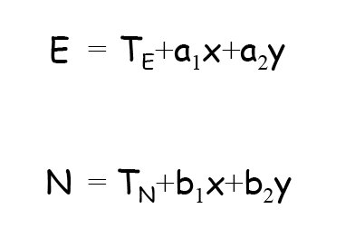

Week 4:
Maps, Data Entry, Editing, and Output
Intro to GISEvan Lue, PhD
Key Concepts
- Hardcopy vs. digital - the distinction between analog (e.g. hardcopy map) and digital information (e.g. GIS map)
- Digitizing - the process of converting analog data to digital data
Map Elements
Bolstad 2012, Fig 4-3
Graticules
- Graticule - a set of coordinate lines on a map

Bolstad 2012, Fig 4-4
Types of Maps
- Cartometric maps - represent the relative position of objects and thus may be suitable as a source of spatial data
- Feature maps - shows features such as points, lines, and polygons.
- Choropleth maps - depicts quantative information for areas.
- Dot density maps - dots represent values.
- Contour or isopleth maps - depicts common values as isolines.
Types of Maps
Bolstad 2012, Fig 4-5
Isolines/Contours
Isolines - lines of constant value
Bolstad 2012, Fig 4-6
Map Scale

Bolstad 2012, Fig 4-7
Spatial Detail

Bolstad 2012, Fig 4-8
Map vs Feature Generalization
- Map generalization - the overall approximation of a landscape when represented on a map; the collection of feature generalizations.
- Feature generalization - approximation of entities when they are represented on a map.
Types of Generalizations
Bolstad 2012, Fig 4-9
Example of Generalization

Bolstad 2012, Fig 4-10
Example at 24K
This lake is detailed at this large scale.

Bolstad 2012, Fig 4-10 (partial)
Example at 100K
This lake is more generalized when drawn at medium scale.
Bolstad 2012, Fig 4-10 (partial)
Example at 250K
This lake is even more generalized when drawn at small scale.
Bolstad 2012, Fig 4-10 (partial)
On-screen Digitization
Bolstad 2012, Fig 4-11
Hardcopy Digitization
Bolstad 2012, Fig 4-12
Close Up of a Digitizing Tool

Bolstad 2012, Fig 4-11old
Digitization Errors

Bolstad 2012, Table 4-1
Measuring Error
Bolstad 2012, Fig 4-13
Nodes and Vertices
- Vertices - points in features, defining points, lines, or polygons.
- Nodes - the starting or ending vertices of lines.
- Vertices and nodes are often not differentiated.
Bolstad 2012, Fig 4-14
Common Digitizing Errors
Remember the lesson on topology?
Bolstad 2012, Fig 4-15
Snapping
Whether or not a node or vertex snaps is dependent on an XY tolerance, a.k.a. snapping distance (e.g. snap if the node/vertex is within 1 meter)

Bolstad 2012, Fig 4-16
Smoothing Lines
- Spline - a smoothed line or surface created by joining multiple constrained polynomial functions.
Bolstad 2012, Fig 4-17
Lang Method for Thinning

Bolstad 2012, Fig 4-18
Map Scanner

Bolstad 2012, Fig 4-19
Skeletonizing for Thinning
Bolstad 2012, Fig 4-20
Adjusting Scanned Data
Rubbersheeting - a technique to adjust groups of features in an area by fitting local equations to adjust the coordinates of features. Anchor points are used as control points and all other lines and points are adjusted.
Editing Tools in GIS
Bolstad 2012, Fig 4-21
Differences within Different Datasets
We saw this is Lesson 3 in Understanding GIS

Bolstad 2012, Fig 4-22
Coordinate Transformation
Registration - the conversion of coordinate data to an earth-surface coordinate system. Generally, the fitting of cartographic data in one coordinate system to another. Registers data to a map coordinate system.
Control Points for Transformation
Control points - locations of known location in both layers and the map coordinate system.

Bolstad 2012, Fig 4-23
The Affine Transformation

Bolstad 2012, Eqs 4-1 and 4-2

Bolstad 2012, Eqs 4-3 and 4-4
Root Mean Square Error (RMSE)
- RMSE - a statistic that measures the difference between true and predicted data values for coordinate locations.
Bolstad 2012, Eq 4-5
Bolstad 2012, Eq 4-6
Control Points and Error

Bolstad 2012, Fig 4-24
Other Coordinate Transformations

Bolstad 2012, Eqs 4-7 and 4-8
Bolstad 2012, Eq 4-9
Iterative Fitting
Bolstad 2012, Fig 4-25
RMSE between Different Transformations

Bolstad 2012, Fig 4-26
Potential Control Points
Bolstad 2012, Fig 4-28
Raster Resampling
Bolstad 2012, Fig 4-30
Resampling Methods
- Nearest neighbor - takes value of nearest cell.
- Bilinear interpolation - distance based averaging of the four nearest cells.
- Cubic convolution - weighted average of 16 nearest cells.
Bilinear Interpolation
Bolstad 2012, Fig 4-31
Maps Have Themes
Bolstad 2012, Fig 4-32
Symbology

Bolstad 2012, Fig 4-33
Labels

Bolstad 2012, Fig 4-34
Label Placement
Bolstad 2012, Fig 4-35
More Map Elements

Bolstad 2012, Fig 4-36
More Map Elements
- Data area or pane (a.k.a. view extent, or data frame in ArcMap)
- Neatline - a frame surrounding a map element
- Inset - a data frame placed within the borders of another data frame
- Scalebars - indicates real-world distances on a map
- Legends - a key that describes the symbology of feature classes in the map
- North arrow - an arrow that points north (may be geographic, grid, or magnetic north)
Bad Map, Good Map
Let's talk
Bolstad 2012, Fig 4-37
File Format Conversions
Bolstad 2012, Fig 4-38
Metadata Example
Metadata - data about data.
Bolstad 2012, Fig 4-39